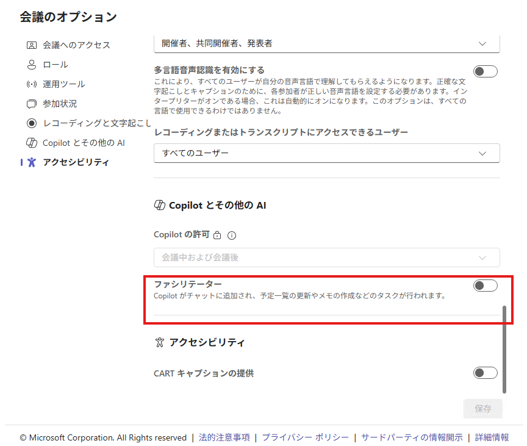

こんにちは。Unified Communications サポート チームです。
いつも Microsoft Teams をご利用いただきありがとうございます。
Microsoft 365 Copilot ライセンス (以降、Copilot ライセンス) が付与されていない共同開催者が、会議オプションにおいてファシリテーターのトグルを操作できてしまう、という事象が現在確認されております。
同様の問題が生じている場合には本記事をご参照ください。

背景について
共同開催者とは
Teams 会議の「共同開催者」とは、開催者が指定した、会議の管理権限を共有するユーザーのことです。
共同開催者は、会議オプションの変更やレコーディングの開始・停止など、開催者とほぼ同様の操作を行うことが可能です。
ファシリテーターとは
ファシリテーター (Facilitator) は、Teams 会議の中で動作する AI エージェントです。
会議チャットでの AI による質問応答、アジェンダタイマーによる進行管理、議事録の自動作成などの機能を提供します。
ファシリテーターを利用するには、以下のすべてを満たす必要があります。
なお、既定値はオンです。
- 対象の Microsoft 365 ベースのライセンス (E3 / E5 / Business Standard 等)
- Microsoft Teams ライセンス
- Copilot ライセンス
詳しくは以下の弊社公開情報に記載しておりますので、必要に応じてご参照ください。
Title: Microsoft Teams会議のファシリテーター - Microsoft サポート
Url: https://support.microsoft.com/ja-jp/office/37657f91-39b5-40eb-9421-45141e3ce9f6
Title: Microsoft Teamsでファシリテーターを設定する - Microsoft Teams | Microsoft Learn
Url: https://learn.microsoft.com/ja-jp/microsoftteams/facilitator-teams
ファシリテーターの各ライセンスパターンにおける想定動作
ファシリテーターの会議オプションにおける設定可否は、開催者および共同開催者の Microsoft 365 Copilot ライセンスの有無によって以下のとおり異なります。
| # | 開催者 | 共同開催者 | 想定動作 (共同開催者) |
|---|---|---|---|
| ① | Copilot ライセンスなし | Copilot ライセンスあり | 会議オプションにファシリテーターの設定項目が表示されない |
| ② | Copilot ライセンスあり | Copilot ライセンスあり | 会議オプションでファシリテーターをオン・オフに設定可能 |
| ③ | Copilot ライセンスあり | Copilot ライセンスなし | 会議オプションでファシリテーターのトグルを変更できない (想定動作) |
上記 ①② は想定通りの動作です。特に ① においては、開催者が Copilot ライセンスを持たない場合、会議レベルでファシリテーター機能がサポートされないため、共同開催者のライセンス有無にかかわらず設定項目自体が表示されません。
発生事象について
上記 ③ のパターンにおいて、本来であれば共同開催者に Microsoft 365 Copilot ライセンスが付与されていなければファシリテーターのトグルを変更できないことが想定された動作ですが、UI 上でトグルの操作が可能になってしまう事象が確認されております。
さらに、この事象においてはトグルの操作方向によって挙動が異なることが確認されております。
オフからオンに変更した場合
以下の 2 ステップを実施した場合、一見設定が保存されたように見えますが、再度会議オプションを開くとトグルがオフに戻り、ファシリテーターが有効化されることはありません。
- 開催者 (Copilot ライセンスあり) が作成した会議に、共同開催者 (Copilot ライセンスなし) が割り当てられている
- 共同開催者が会議オプションを開き、ファシリテーターのトグルをオンに変更する
オンからオフに変更した場合
以下の 2 ステップを実施した場合、変更は実際に保存され、開催者がセットしたファシリテーターが意図せず無効化される可能性があります。
- 開催者 (Copilot ライセンスあり) がファシリテーターをオンに設定した会議に、共同開催者 (Copilot ライセンスなし) が割り当てられている
- 共同開催者が会議オプションを開き、ファシリテーターのトグルをオフに変更する
原因
いずれのケースにおいても、システム側で Copilot ライセンス未保有の共同開催者に対してトグルの操作を制限できていないことが原因です。
Copilot ライセンスを保有していない共同開催者がファシリテーターのトグルを操作できること自体が想定外の動作となります。
回避策について
現時点では、ライセンス未保有の共同開催者に対して UI 上でトグルの表示を制限する方法は確認されておりません。
特に、共同開催者がトグルをオンからオフに変更した場合は設定が実際に反映されるため、ファシリテーターが意図せず無効化されるリスクがあります。
対処としましては、以下の点を該当ユーザーにご周知いただくことをお勧めいたします。
- Copilot ライセンスを保有していない共同開催者は、ファシリテーターのトグルを操作しないでください
- オフからオンへの変更は保存されませんが、オンからオフへの変更は保存されファシリテーターが無効化されます
修正時期について
今後の修正等の対応予定としましては、2026 年 8 月上旬ごろを見込んでおります。
当該対応に進展があり次第、本 Blog にてご案内いたします。
NOTE: - 2026 年 4 月 3 日に、初版を公開しました。
※本情報の内容（添付文書、リンク先などを含む）は、作成日時点でのものであり、予告なく変更される場合があります。